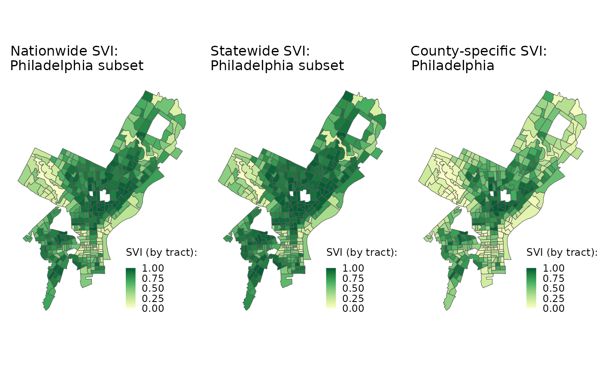

Since SVI is calculated from percentile ranks of census variables, it’s important to keep in mind the SVI values may be affected by the total area that we are ranking each geographic unit against. Several options are available when it comes to the total area included in SVI calculations.
Currently CDC/ATSDR Social Vulnerability Index (SVI) database provides nationwide and statewide SVI at the census tract and county level. Nationwide-SVI will obviously include SVI for all the states, but the value may be different from the statewide-SVI for the corresponding state due to the ranking method. For example, nationwide-SVI at the census tract level is obtained by ranking the variables in each census tract among all tracts in the US, while statewide-SVI for PA at the census tract level is obtained by ranking the variables in each tract among all tracts in PA. Despite the likely different SVI values, both versions offers valuable information about the relative social vulnerability of communities within a different geographic context.
Building upon this, in addition to nationwide or statewide SVI calculations for flexible geographic levels (e.g. at the ZCTA level; mentioned in Introduction to findSVI), findSVI also supports SVI calculations for more specific geographic context (below the state level, e.g. county). Similarly, SVI of any geographic level below state will be included in nationwide and statewide SVI, but the values calculated from findSVI may be different because the percentile ranking is done within a different area (different total units are used in ranking).
Here, we’ll briefly show the tract-level SVI values for Philadelphia (County), PA on maps using CDC’s nationwide and statewide SVI, as well as a county-specific SVI calculated from findSVI.
Nationwide and statewide SVI
Although we could use findSVI for nationwide- and statewide-SVI, it may be more convenient to download the data from CDC/ATSDR Social Vulnerability Index (SVI) database, especially for nationwide census tract-level data with geometry.
#source: https://www.atsdr.cdc.gov/placeandhealth/svi/data_documentation_download.html
#choose map data (recently changed to ESTI geodatabase), unzip files
# nationwide
us_svi <- st_read("../../SVI2020_US_tract.gdb/")
# statewide (PA)
pa_svi <- st_read("../../SVI2020_PENNSYLVANIA_tract.gdb/")
# old format: pa_svi <- st_read("pa_ct_2020_shapefile/SVI2020_PENNSYLVANIA_tract.shp")
# alternative: findSVI
# us_data <- get_census_data(2020,
# state = "US", #"PA" for statewide data
# geography = "tract",
# geometry = TRUE)
#
# us_svi <- get_svi(2020, us_data)After obtaining the nationwide and statewide(Pennsylvania) SVI by either findSVI or CDC’s database, we could filter the result by the county and only keep the data for Philadelphia.
# nationwide
us_svi_phl <- us_svi %>%
select(1:7, contains("RPL_THEME")) %>%
rename(GEOID = FIPS,
#format switched to ESRI gdb, col name change -7/28/23
geometry = Shape) %>%
#CDC use -999 as NAs
filter(RPL_THEMES >= 0,
ST_ABBR == "PA",
COUNTY == "Philadelphia")
glimpse(us_svi_phl)#> Rows: 388
#> Columns: 13
#> $ ST <chr> "42", "42", "42", "42", "42", "42", "42", "42", "42", "42",…
#> $ STATE <chr> "Pennsylvania", "Pennsylvania", "Pennsylvania", "Pennsylvan…
#> $ ST_ABBR <chr> "PA", "PA", "PA", "PA", "PA", "PA", "PA", "PA", "PA", "PA",…
#> $ STCNTY <chr> "42101", "42101", "42101", "42101", "42101", "42101", "4210…
#> $ COUNTY <chr> "Philadelphia", "Philadelphia", "Philadelphia", "Philadelph…
#> $ GEOID <chr> "42101000101", "42101000102", "42101000200", "42101000300",…
#> $ LOCATION <chr> "Census Tract 1.01, Philadelphia County, Pennsylvania", "Ce…
#> $ RPL_THEME1 <dbl> 0.2486, 0.2251, 0.6340, 0.1153, 0.3515, 0.0017, 0.0473, 0.7…
#> $ RPL_THEME2 <dbl> 0.1972, 0.0037, 0.0497, 0.2564, 0.2988, 0.0013, 0.0688, 0.0…
#> $ RPL_THEME3 <dbl> 0.4678, 0.2809, 0.8235, 0.6105, 0.5988, 0.3492, 0.3249, 0.7…
#> $ RPL_THEME4 <dbl> 0.4840, 0.8570, 0.9504, 0.9106, 0.9205, 0.3731, 0.6343, 0.9…
#> $ RPL_THEMES <dbl> 0.2888, 0.1676, 0.6587, 0.4253, 0.5832, 0.0044, 0.1433, 0.7…
#> $ geometry <MULTIPOLYGON [°]> MULTIPOLYGON (((-75.152 39...., MULTIPOLYGON (…
# statewide (PA)
pa_svi_phl <- pa_svi %>%
select(1:7, contains("RPL_THEME")) %>%
rename(GEOID = FIPS) %>%
filter(RPL_THEMES>= 0,
COUNTY == "Philadelphia")
glimpse(pa_svi_phl)#> Rows: 388
#> Columns: 13
#> $ ST <chr> "42", "42", "42", "42", "42", "42", "42", "42", "42", "42",…
#> $ STATE <chr> "Pennsylvania", "Pennsylvania", "Pennsylvania", "Pennsylvan…
#> $ ST_ABBR <chr> "PA", "PA", "PA", "PA", "PA", "PA", "PA", "PA", "PA", "PA",…
#> $ STCNTY <chr> "42101", "42101", "42101", "42101", "42101", "42101", "4210…
#> $ COUNTY <chr> "Philadelphia", "Philadelphia", "Philadelphia", "Philadelph…
#> $ GEOID <chr> "42101000101", "42101000102", "42101000200", "42101000300",…
#> $ LOCATION <chr> "Census Tract 1.01, Philadelphia County, Pennsylvania", "Ce…
#> $ RPL_THEME1 <dbl> 0.3105, 0.2976, 0.7757, 0.1388, 0.4349, 0.0029, 0.0567, 0.8…
#> $ RPL_THEME2 <dbl> 0.2015, 0.0029, 0.0464, 0.2955, 0.2479, 0.0012, 0.0620, 0.1…
#> $ RPL_THEME3 <dbl> 0.7213, 0.5299, 0.9150, 0.8115, 0.8057, 0.6070, 0.5797, 0.8…
#> $ RPL_THEME4 <dbl> 0.5494, 0.9005, 0.9729, 0.9576, 0.9582, 0.3605, 0.6789, 0.9…
#> $ RPL_THEMES <dbl> 0.3802, 0.2253, 0.7677, 0.5244, 0.6817, 0.0059, 0.1658, 0.8…
#> $ geometry <MULTIPOLYGON [°]> MULTIPOLYGON (((-75.152 39...., MULTIPOLYGON (…County-specific SVI
For retrieving data and calculation at any geographic level below
state, we need to use get_census_data() followed by
get_svi(). (For nation- or state-level data processing
without geometry, the easiest option is one-step
find_svi().)
phl_ct_2020_data <- get_census_data(
2020,
state = "PA",
county = "Philadelphia",
geography = "tract",
geometry = TRUE
)
phl_ct_svi_2020 <- get_svi(2020, phl_ct_2020_data)%>%
select(GEOID, contains("RPL_theme")) %>%
drop_na()
glimpse(phl_ct_svi_2020)
#> Rows: 390
#> Columns: 7
#> $ GEOID <chr> "42101000101", "42101000102", "42101000200", "42101000300",…
#> $ RPL_theme1 <dbl> 0.1080, 0.1414, 0.4267, 0.0437, 0.2057, 0.0026, 0.0180, 0.5…
#> $ RPL_theme2 <dbl> 0.2128, 0.0103, 0.1333, 0.2282, 0.2641, 0.0026, 0.1179, 0.1…
#> $ RPL_theme3 <dbl> 0.1769, 0.0436, 0.5359, 0.3051, 0.2923, 0.0769, 0.0615, 0.4…
#> $ RPL_theme4 <dbl> 0.3846, 0.7282, 0.9154, 0.9128, 0.9436, 0.3308, 0.8436, 0.9…
#> $ RPL_themes <dbl> 0.1385, 0.0846, 0.4692, 0.2538, 0.3974, 0.0000, 0.1333, 0.5…
#> $ geometry <MULTIPOLYGON [°]> MULTIPOLYGON (((-75.152 39...., MULTIPOLYGON (…
# matching id from nation/statewide SVI for mapping
match_id <- pa_svi_phl$GEOID
phl_svi <- phl_ct_svi_2020 %>%
filter(GEOID %in% match_id)3 angles of a story
For visualization, we’ll create maps on the same color scale (using tmap).
nation <- us_svi_phl %>%
select(GEOID, geometry, RPL_THEMES) %>%
drop_na() %>%
#using NAD83 in tmap
tm_shape(projection = sf::st_crs(26915))+
tm_polygons("RPL_THEMES",
palette = c("orange","navy"),
style = "cont",
breaks = c(0, 0.25, 0.5, 0.75, 1),
title = "SVI (by tract)")+
tm_layout(title = "Nationwide SVI: \nPhiladelphia subset",
title.size = 1,
title.position = c("left", "TOP"),
legend.position = c("RIGHT", "bottom"),
legend.title.size = 0.9,
legend.width = 2)
state <- pa_svi_phl %>%
select(GEOID, geometry, RPL_THEMES) %>%
drop_na() %>%
tm_shape(projection = sf::st_crs(26915))+
tm_polygons("RPL_THEMES",
palette = c("orange","navy"),
style = "cont",
breaks = c(0, 0.25, 0.5, 0.75, 1),
title = "SVI (by tract)")+
tm_layout(title = "Statewide SVI: \nPhiladelphia subset",
title.size = 1,
title.position = c("left", "TOP"),
legend.position = c("RIGHT", "bottom"),
legend.title.size = 0.9,
legend.width = 2)
county <- phl_svi %>%
select(GEOID, geometry, RPL_themes) %>%
drop_na() %>%
tm_shape(projection = sf::st_crs(26915))+
tm_polygons("RPL_themes",
palette = c("orange","navy"),
style = "cont",
breaks = c(0, 0.25, 0.5, 0.75, 1),
title = "SVI (by tract)")+
tm_layout(title = "County-specific SVI: \nPhiladelphia",
title.size = 1,
title.position = c("left", "TOP"),
legend.position = c("RIGHT", "bottom"),
legend.title.size = 0.9,
legend.width = 2)
plots <- list(nation, state, county)
current.mode <- tmap_mode("plot")
#> tmap mode set to plotting
tmap_arrange(
plots,
nrow = 1,
width = c(0.34, 0.33, 0.33)
)
As we can see, while the SVI values (actual color) vary among the three maps depending on how the percentile ranking is performed to obtain the SVI, they generally show the same pattern (which tracts are darker/lighter in each map).
Overall, while total areas included in percentile ranking affect resulting SVI values, they provide different perspectives to look at the same story. On another note, when studying the social vulnerability within a smaller region, especially metropolitan areas/cities, it may be helpful to consider the geographic context in interpreting SVI to better understand the disparities among communities.